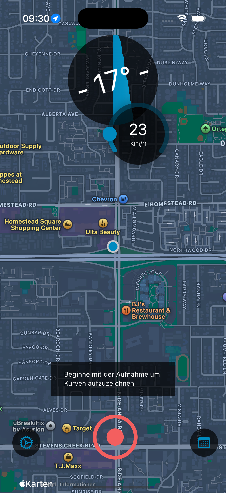

Improve your riding skills and become a more secure driver with Curve Tracker. Get precise feedback on your curve technique and bike handling to build confidence and trust in your abilities.

Measure the exact angle of each curve using smartphone sensors for unparalleled accuracy, unlike GPS triangulation used by other apps.
See exact details of each curve with very detailed analysis to help you become a better rider and gain more trust in your bike and tires.
See how good you are when doing curves and track your acceleration from 0-100kmh with comprehensive performance metrics.
Get personalized training insights and improve your riding skills with detailed feedback on your curve technique and bike handling.
Track your entire route with precision and get comprehensive data about your riding performance and curve execution.
Get very personal and fast service from our dedicated support team, ensuring you get the most out of your riding experience.
Curve Tracker helps you become a more confident and secure rider through precise curve analysis and personalized training feedback. Understand your bike's behavior and improve your technique with every ride.
The most popular curve tracker for iOS among motorcyclists with a large community in Germany, Austria, and Switzerland
"Hi, I have been using this app for awhile now and must say it is simply the best lean angle app for a motorbike, Toni is great to talk to and listens to you when you have a request or require any information about the app, I better not say about any future updates but it will be worth the wait, again a very helpful app to use while riding."
"Die App ist super macht was man erwartet und funktioniert einwandfrei."
"Tolle App für Motorradfahrer! Übersichtlich, praktisch und genau das, was man für kurvenreiche Touren braucht. Läuft stabil und liefert verlässliche Ergebnisse aus meiner Sicht. Geschwindigkeit und Schräglage in der Kurve wird aufgezeichnet. Echt Toll Gemacht!!!"
Join thousands of motorcyclists who use Curve Tracker to become better, more secure riders. Download now and start your journey to mastering motorcycle curves.